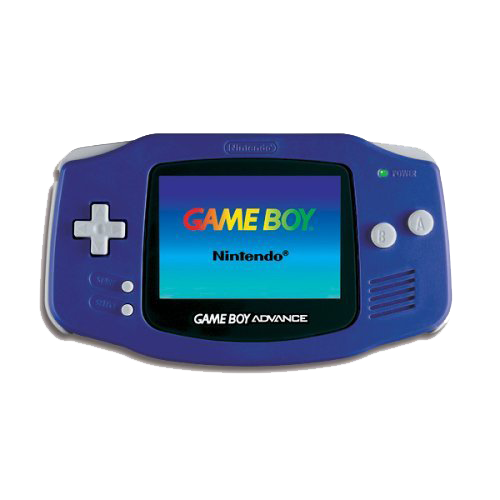

GameBoy Advance
R$170
O Game Boy Color é um console portátil de 8-bits, desenvolvido pela Nintendo e lançado em
21 de outubro de 1998 no Japão e em novembro em outros mercados. É o sucessor do Game
Boy. O portátil possui uma tela colorida em vez de monocromática, mas não é retroiluminada.